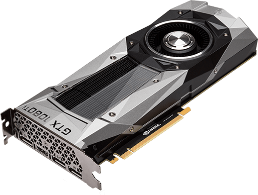

Gaming Graphic Cards
GEFORCE GTX 1060
The 1060 comes in two variations, the 3GB and 6GB. The 6GB
is more powerful than the 3GB one and has the perfect amount
of VRAM. 3GB is too little for future proofing while 6GB is just
the right amount for future games. It is capable at playing at
resolutions higher than 1080p, but it does not perform very well
in terms of frames. Its more of a perfect 1080p card.
GeForce GTX 1060 6 GB GeForce GTX 1060 3 GB
GPU Architecture: Pascal GPU Architecture: Pascal
Cuda Cores: 1280 Cuda Cores: 1152
Frame Buffer: 6 GB GDDR5 Frame Buffer: 3 GB GDDR5
Memory Speed: 8 Gbps Memory Speed: 8 Gbps
Boost Clock: 1708 MHz Boost Clock: 1708 MHz

GeForce GTX 1070
This is a great card for 1440p resolution. It can achieve 4k
at decent frames but its more well-suited for 1440p. It can
easily achieve 60 frames and stay at 60 frames or higher, majority
of the time.
GPU Architecture: Pascal
Cuda Cores: 1920
Frame Buffer: 8 GB GDDR5X
Memory Speed:8 Gbps
Boost Clock: 1683 MHz
GeForce GTX 1070 TI
1070Ti is not that much more powerful than the 1070 and may be a
waste to buy it. The 1070 if overclocked can achieve the performance
of a 1070Ti. That alone tells you that this card is not worth upgrading
to if you own a 1070. But nonetheless they are both great for 1440p.
GPU Architecture: Pascal
Cuda Cores: 2423
Frame Buffer: 8 GB GDDR5X
Memory Speed: 8 Gbps
Boost Clock: 1683 MHz

GeFoce GTX 1080
The 1080 is for those looking to play at 1440p or 4K. It may
not be as powerful as the 1080TI, but it still is an amazing
card for playing at high resolutions. At 4k however it performs
decently and may not be good enough for many because it will not
be able to achieve 60 frames always.
GPU Architecture: Pascal
Cuda Cores: 2560
Frame Buffer: 8 GB GDDR5X
Memory Speed: 10 Gbps
Boost Clock: 1773 MHz

GeForce GTX 1080 TI
The most powerful gaming card on the market. Recently its
price has been dropping towards it’s MSRP. It is card for
playing at 4k resolution. Because if its power and VRAM it
makes it perfect for playing at high resolutions. It is
significantly more powerful than the 1080
GPU Architecture: Pascal
Cuda Cores: 3584
Frame Buffer: 8 GB GDDR5X
Memory Speed: 10 Gbps
Boost Clock: 1773 MHz

Professional Graphic Cards
NVIDIA TITAN V
NVIDIA TITAN V has the power of 12 GB HBM2 memory and 640 Tensor
Cores, delivering 110 TeraFLOPS of performance. Plus, it features
Volta-optimized NVIDIA CUDA for the best results.
Architecture: NVIDIA Volta
Frame Buffer: 12 GB HBM2
Boost Clock: 1455 MHz
Tensor Cores: 640
CUDA Cores: 5120
The Quadro Professional cards deliver the extreme memory capacity,
scalability, and performance that designers, architects, and scientists
need to create, build, and solve complex problems.
Quadro P4000
CUDA Parallel-Processing Cores: 1792
GPU Memory: 8 GB GDDR5
FP32 Performance: 5.3 TFLOPS
Quadro P5000
CUDA Parallel-Processing Cores: 2560
GPU Memory: 16 GB GDDR5X
FP32 Performance: 8.9 TFLOPS
Quadro P6000
CUDA Parallel-Processing Cores: 3840
GPU Memory: 24 GB GDDR5X
FP32 Performance: 12 TFLOPS

Quadro GP100
CUDA Parallel-Processing Cores: 3584
GPU Memory: 16 GB HBM2
FP64 Performance: 5.2 TFLOPS
FP32 Performance: 10.3 TFLOPS
FP16 Performance: 20.7 TFLOPS
Quadro GV100
CUDA Parallel-Processing Cores: 5120
GPU Memory: 32 GB HBM2
FP64 Performance: 7.4 TFLOPS
FP32 Performance: 14.8 TFLOPS
FP16 Performance: 29.6 TFLOPS